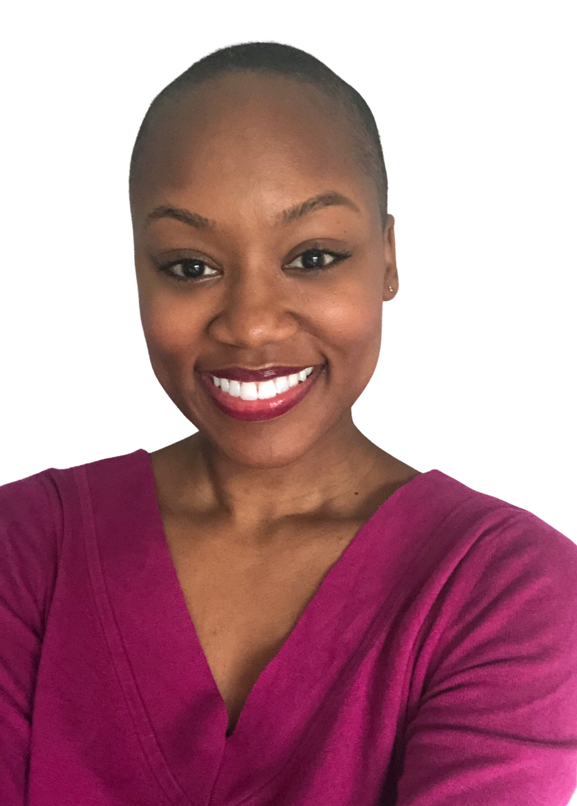
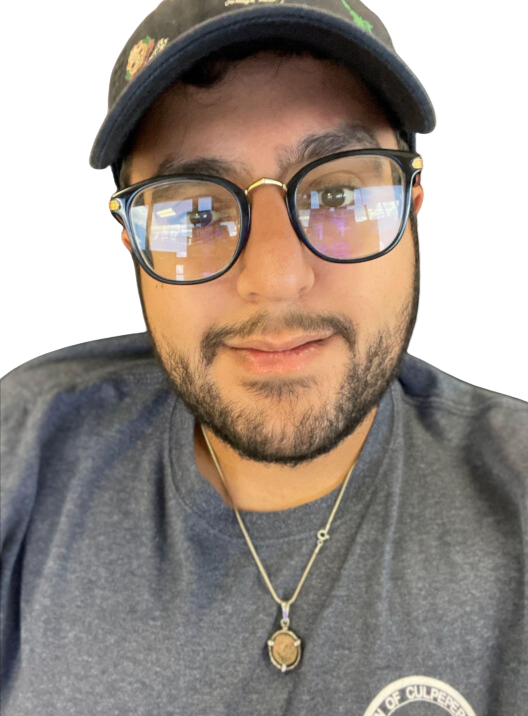
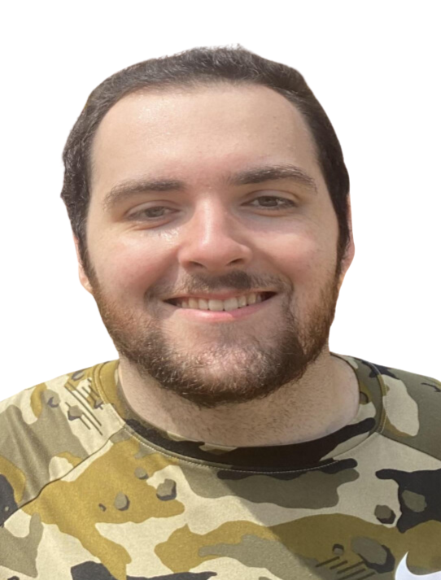

Ashley Borum
is a senior at Old Dominion University seeking a BSCS in computer science.
She has experience with a number of programming languages including C++, Python,
and Java. She has also worked with deep learning models for image classification
and enjoys travel in her spare time.

Hawar Hawarry
is a senior at Old Dominion University studying Computer Science. He has experience
with Java, C++, and Python. Some of his hobbies include coding, gaming, and traveling.
Zach Schumacher
is a current senior at Old Dominion University participating in the linked CS program.
He likes to learn new coding languages in his free time and in his spare time loves playing video games and
building computers.
Jeremiah Shelor
is seeking a BS in Computer Science from Old Dominion University as a Second Degree
student. After nearly a decade covering energy markets as a business reporter, he hopes to leverage software
and analytics to help consumers transition away from fossil fuels.

Bradley Sherwood
is a senior at Old Dominion University studying to get his bachelor's degree in computer
science. He has experience with languages such as C++ and Java and also has some electrical engineering
experience. He's currently an intern at INIT and some of his hobbies include playing video games, watching
football, and learning about science.
Manuel Tan
is a current senior at Old Dominion University majoring in Computer Science with a minor
in Cybersecurity. He likes to learn new things and practices coding in his spare time. In his spare time,
Manuel likes to travel and read books.